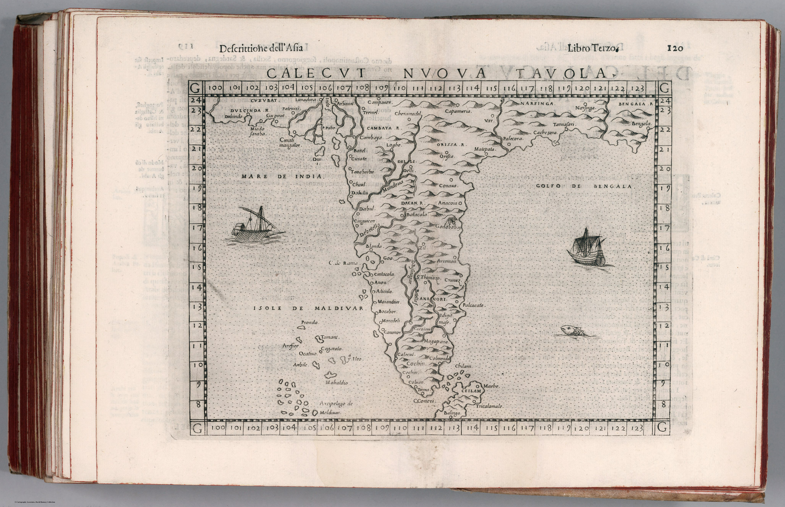

Click to enlargeThe edition
Calecvt Nvova Tavola appears in the 1599 Venetian edition of Ptolemy translated and expanded by Girolamo Ruscelli, with revisions by Giuseppe Rosaccio. It is a copperplate map in a book that deliberately paired classical geography with ‘new’ regional tables.
Calicut as the organising place
The title gives Calicut exceptional prominence. A century after Vasco da Gama’s arrival, the Malabar port still condensed Europe’s image of the south-western coast: pepper, maritime exchange and the first Portuguese route into the Indian Ocean trading system.
Correction within continuity
The map updates coastal geography using post-Ptolemaic information, but it does so without discarding Ptolemy. The new sheet is literally bound into an ancient geographical work. Renaissance cartography advances by annotation, supplement and comparison rather than by a single break with inherited authority.
The gaze
India is reduced to the commercially charged coast Europeans knew best. The sheet records both discovery and intellectual conservatism: new maritime information given durable form inside the most prestigious old framework available.